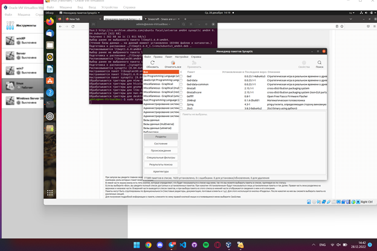

Установку программы мы делаем через консоль. Запуск так же.
Установка
Внешний вид программы
В программе мы видим список всех пакетов, которые идут через систему. В табдице рядом выводиться таблица со списком всех пакетов и их параметров.
Таблица
В программе можно сортировать по разделам, состояниям, архитекту, специальным фильтрам.
Фильтры
В программе так же есть вкладка с описанием пакета.

Описание